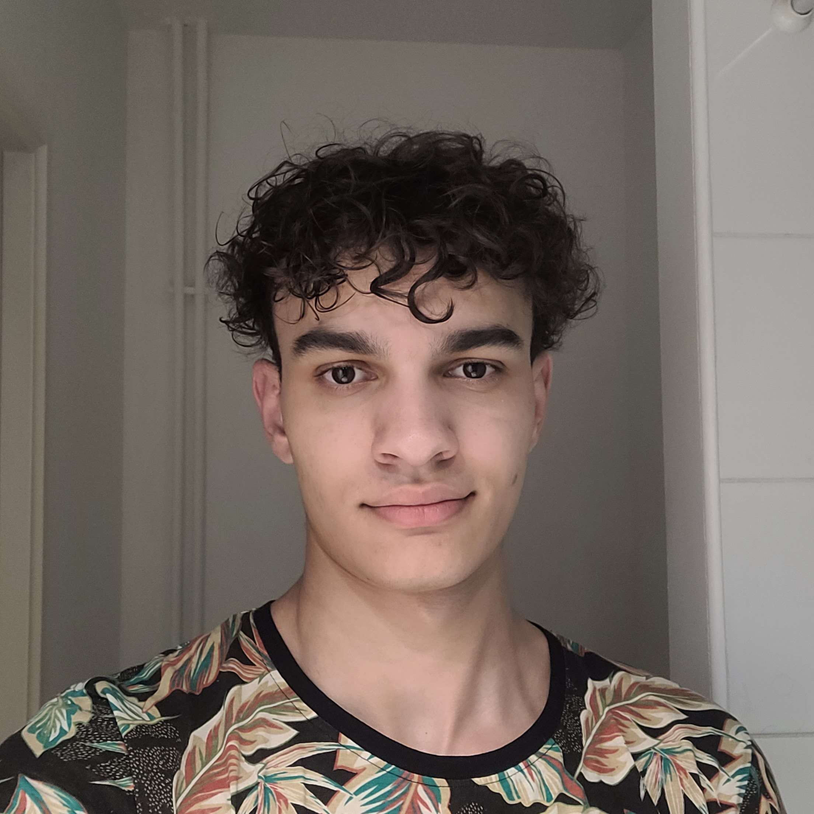

<!DOCTYPE html>
<html>
    <head>
        <title>Porfolio</title>
        <meta charset="utf-8">
        <link rel="stylesheet" href="style.css" />
    </head>
</html>
<body>
    <div class="rectangleMiroir">
        <a class="left" href="index.html"></a>
        <div></div>
        <div class="moi"><h2>A propos de moi :</h2>
        <p>Je m'appelle Jules Albuquerque Parana. Je suis passionné de sports, de musiques et d'informatique. Travailleur et curieux je pense pouvoir m'adapter à chaque situations pour être un bon développeur informatique.
        </p></div>
        <div ><h2>Mon parcours scolaire :</h2> <p>Scolarisé au lycée Camille Corot et à présent diplomé du bac avec les spécialités NSI, Maths et Physique-Chimie, je suis à présent scolarisé à l'IUT 2 de Grenoble en BUT informatique. Je voudrais continuer mes études à l'étranger pour me spécialiser dans la cybersécurité et ainsi devenir hacker éthique. </p></div>
    </div>
    <textarea rows="4" cols="50"></textarea>

</body>
<footer>

</footer>